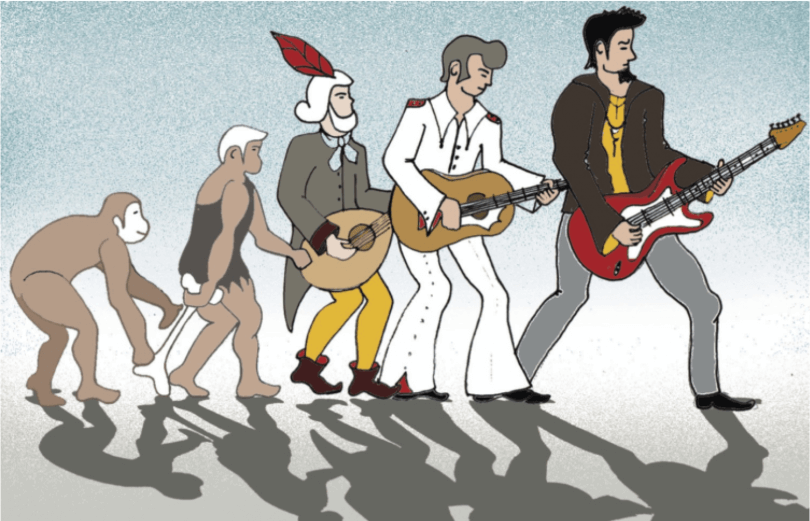

La música ha acompañado a la humanidad desde el principio, por lo que la riqueza de estas es mas amplia
de lo que las personas en la actualidad se podría imaginar. Usada en ceremonias religiosas, eventos sociales,
acompañando otras muestras artísticas o en un típico recital, la influencia de esta en la historia ha sido notable,
por lo que es importante conocer la historia de la misma.

La expresión musical esta ligada a la cultura de la humanidad, por lo que hablar completamente de una historia musical
seria una tarea demasiado compleja, en esta pagina nos concentraremos en la música europea ya que en general
es la mejor documentada y la forma en que influencio en la música contemporánea que disfrutamos en la actualidad.